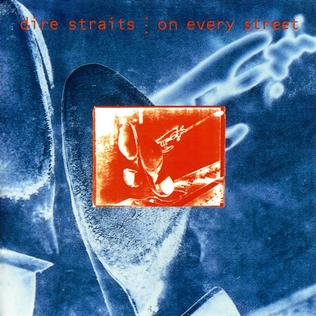

Todo comenzó en Londres, donde tres amigos compartían piso. Se trataba de los hermanos Mark y David Knopfler, junto a John Illsley. Mark Knopfler trabajaba como maestro de escuela, David era asistente social y John trabajaba en una tienda de discos. A ellos se solía unir su amigo Pick Whiters, quien era el único que estaba introducido en el mundo de la música.
En 1977 Pick y Mark deciden crear un grupo. Pick sugiere el nombre: 'Dire Straits', algo así como 'situación límite'. Juntos, los cuatro componentes del grupo consiguen reunir el dinero para grabar una maqueta. En ella, cuatro temas: 'Wild West End', 'Water Of Love', 'Sacred Loving' y 'Sultans Of Swing'.
Cuando un conocido disc-jockey de una emisora de radio en Londres pinchó la maqueta en su emisora, la reacción de la audiencia fue muy favorable, lo que oblogó al pinchadiscos a seguir emitiendo la música de los Knopfler y compañía.
Entre los oyentes de la emisora se encontraba un conocido mánager de Fonogram, a la búsqueda de nuevos talentos, quien no cesa hasta que consigue que firmen un contrato con su compañía. El mismo representante de Fonogram les presenta a una representante para sus conciertos.
Los Dire Straits actúan como teloneros del grupo norteamericano 'Talking Heads' en su gira por Gran Bretaña, lo que les permite coger experiencia y darse a conocer. Entre todas las notas del grupo destacan las de la guitarra de Mark Knopfler, quien nos obsequia con sonidos extraordinarios entre el blues y el rock.
En marzo de 1978 Dire Straits publican su primer álbum, 'Dire Straits'. Poco después comienzan a hacer conciertos en solitario, incluso fuera del Reino Unido.
Un año después graban 'Communiqué', su segundo álbum y el menos vendido del grupo. Para compensar, sacan 'Making Movies', una vuelta al rock clásico, con temas más fuertes.
Con 'Lover Over Gold' dan un nuevo giro a su estilo, más al aire que a Mark le gusta seguir. Un disco con sonidos casi orquestales, aunque sobre la base del rock.
En 1984 sale a la luz 'Alchemy', una selección de diez canciones recogidas de los conciertos en directo del grupo en la gira del año anterior.
A finales de 1984 los Dire Straits se encierran para preparar su nuevo disco. La grabación de este nuevo álbum les llevará varios meses y con ellos colaborar artistas de la talla de Sting. El nuevo álbum se titula 'Brothers In Arms' y será su disco más vendido en todo el mundo, con canciones como 'So Far Away', 'Money For Nothing', 'Walk Of Life', etc.
La gira del disco 'Brothers In Arms' supuso repetir el éxite cosechado por el disco. Duró dos años y ofrecieron 250 conciertos en todo el mundo.
Lo siguiente fue una recopilación de sus mejores canciones y 'Money For Nothing' fue el título escogido.
En 1991 Dire Straits publicaron 'On Every Street', que no cubrió las espectativas generadas por los anteriores títulos y que ha sido, hasta la fecha, el último de los Dire Straits.
Aunque no han anunciado definitivamente su separación, la verdad es que realizan trabajos independientes. Por ejemplo, Mark Knopfler ha editado varios discos en compañía de su guitarra, varios de ellos como bandas sonoras para películas.
 |
 |
 |
 |
 |
 |
| Dire Straits - 1978 | Communique - 1979 | Making Movies - 1980 | Love Over Gold - 1982 | Brothers In Arms - 1985 | On every Street - 1991 |
|
|
|
|
|
|
Dire Straits - 1978
Communique - 1979
Making Movies - 1980
Love Over Gold - 1982
Brothers In Arms - 1985
On every Street - 1991